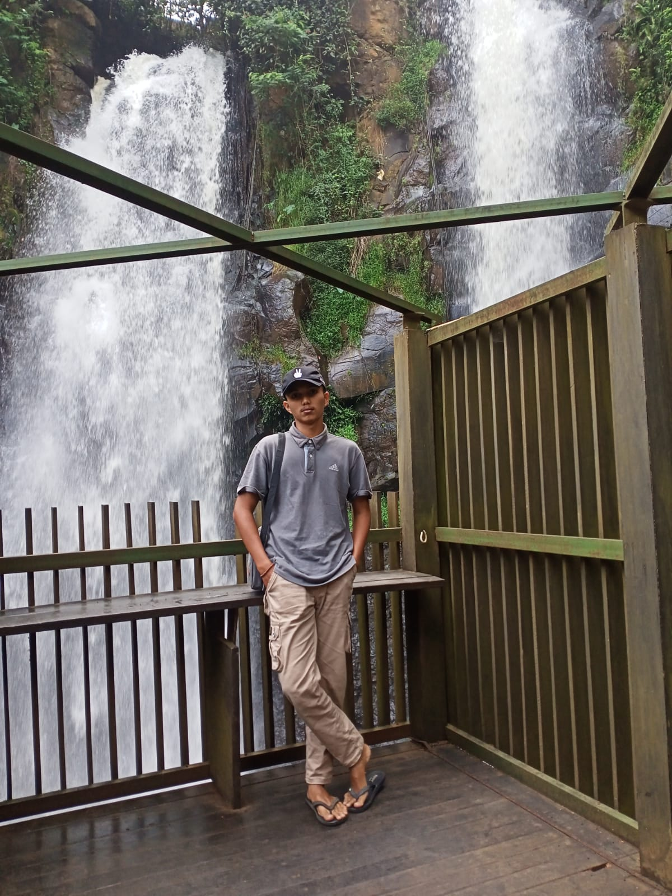

Penghargaan Mahasiswa Terbaik
Saya merasa terhormat telah menerima penghargaan sebagai Mahasiswa Terbaik dalam bidang Agroteknologi pada tahun 2024. Ini adalah bukti kerja keras dan dedikasi dalam studi saya.
Halo! Nama saya Dean anugrah , seorang mahasiswa Agroteknologi di Universitas Bengkulu. Website ini dibuat sebagai tempat untuk berbagi informasi tentang materi kuliah, video edukatif, dan berbagai sumber daya yang berguna bagi para mahasiswa lainnya.
Visi: Menjadi profesional di bidang agroteknologi yang berkontribusi pada ketahanan pangan dan keberlanjutan lingkungan.
Misi:
Saya merasa terhormat telah menerima penghargaan sebagai Mahasiswa Terbaik dalam bidang Agroteknologi pada tahun 2024. Ini adalah bukti kerja keras dan dedikasi dalam studi saya.
Baru-baru ini, saya berpartisipasi dalam penelitian mengenai dampak perubahan iklim pada produktivitas tanaman padi. Hasil penelitian ini menunjukkan pentingnya adaptasi pertanian terhadap perubahan iklim.